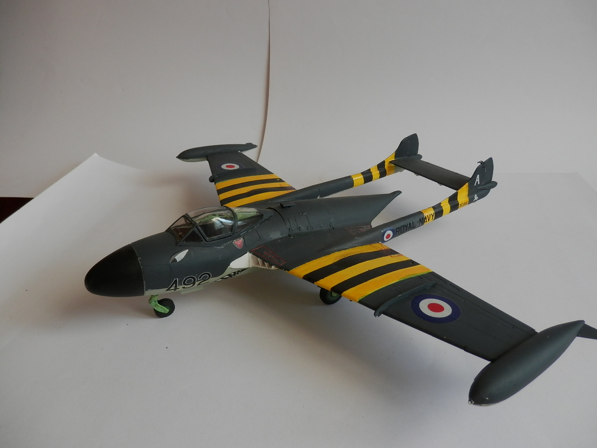
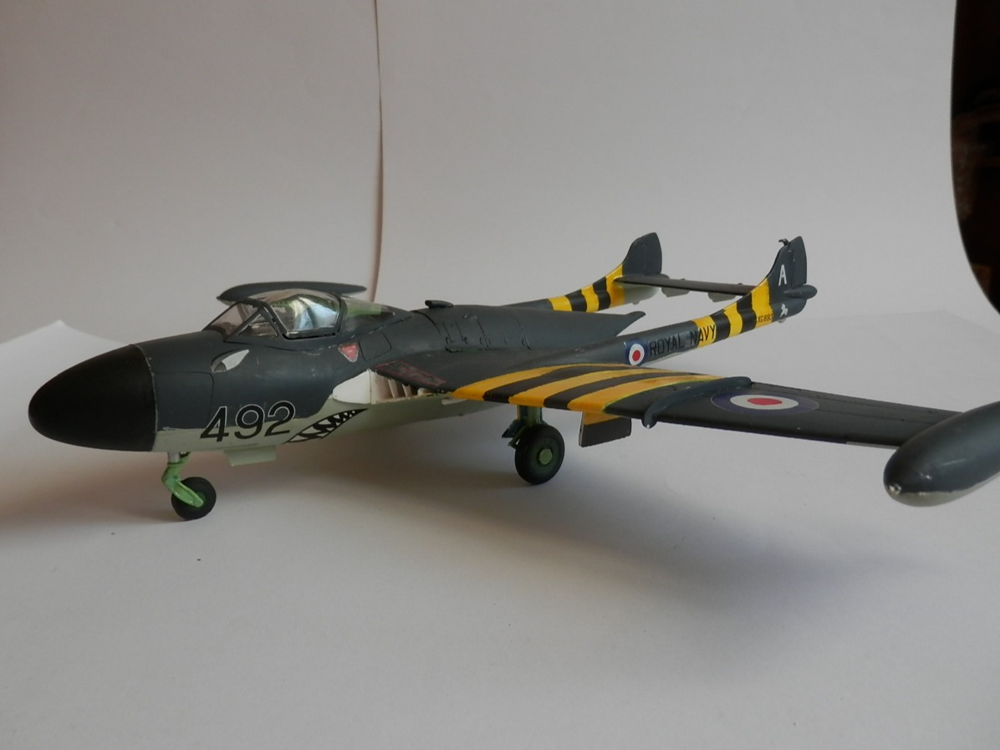
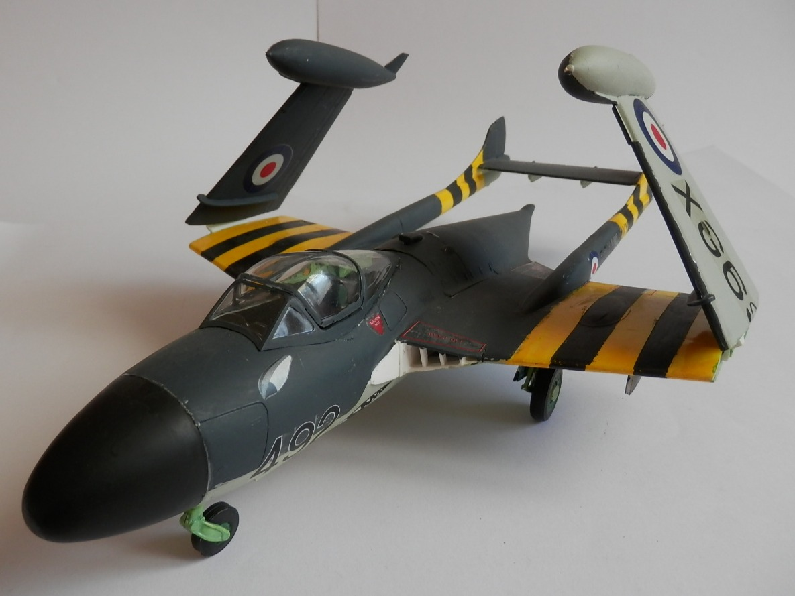
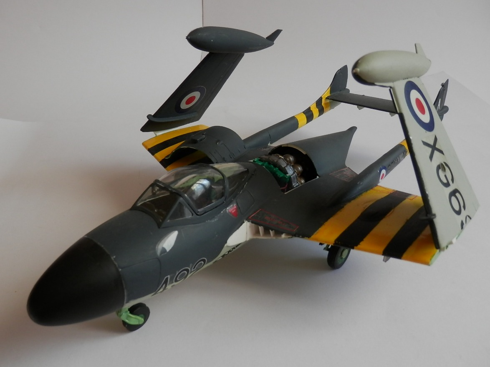
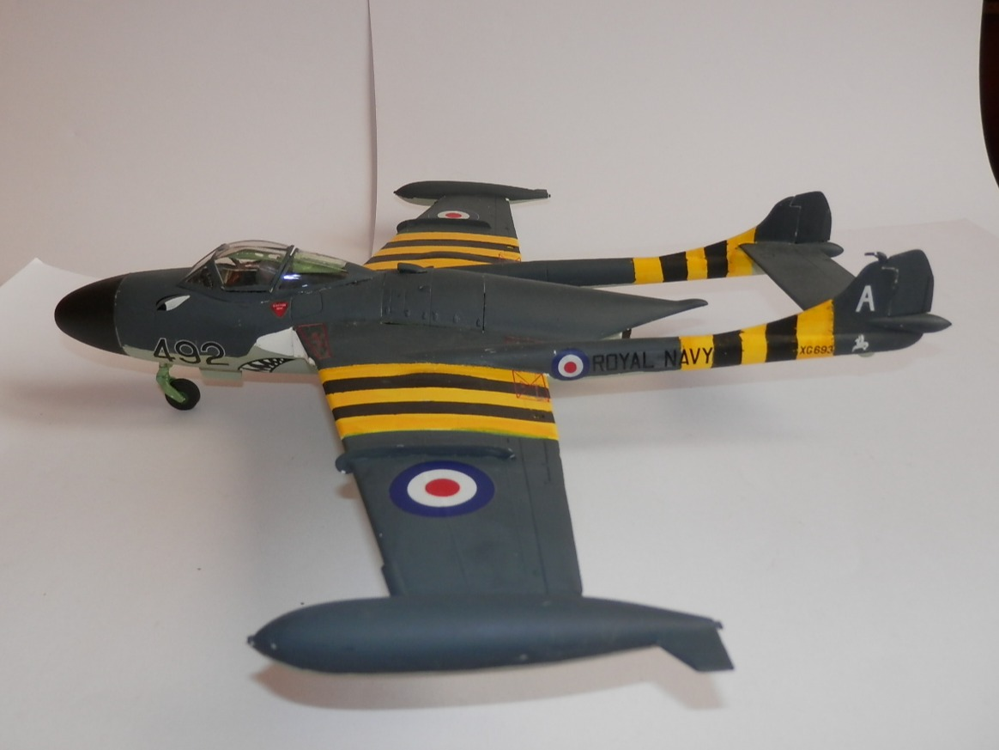
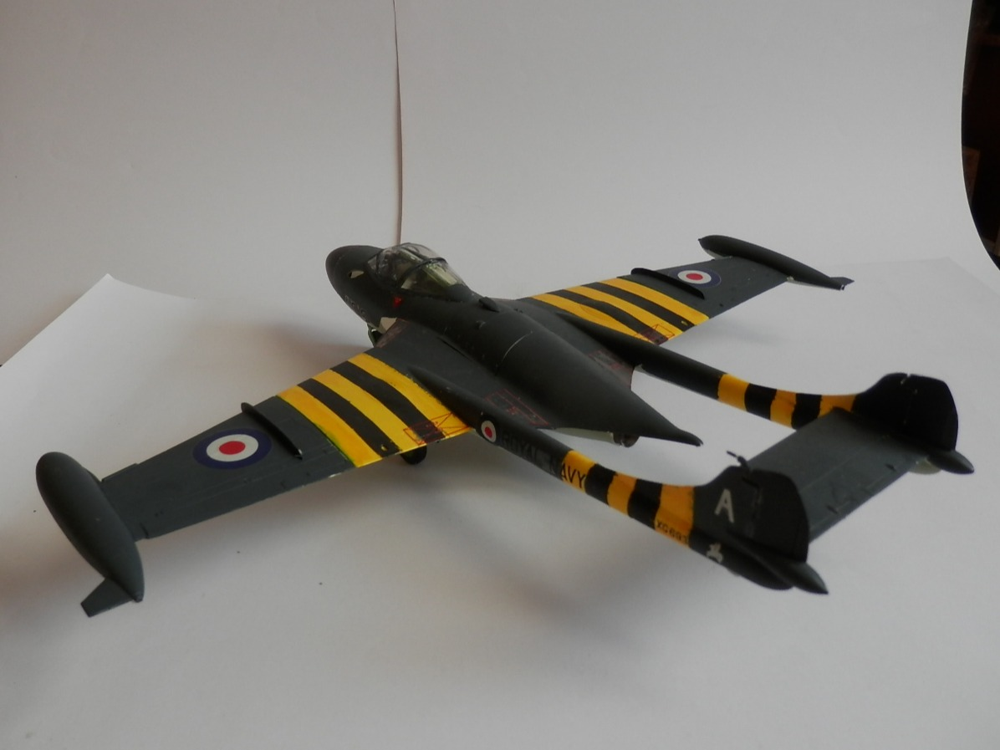
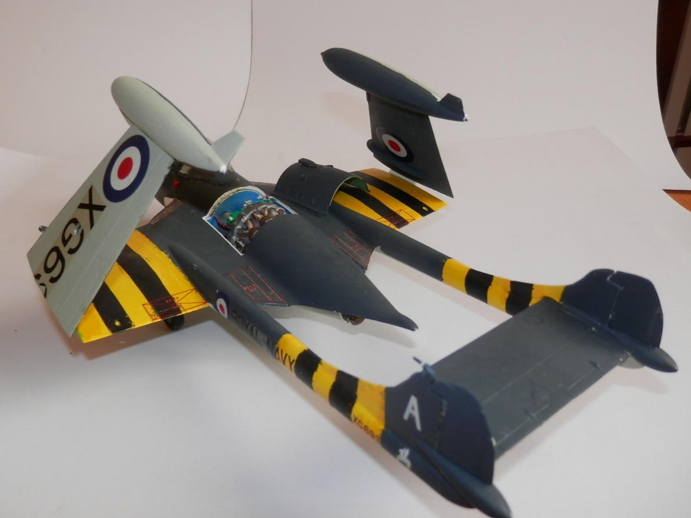

Aerei · scale model archive
De Havilland Sea Venom FAW.22
De Havilland Sea Venom FAW.22 — Kit: Revell, Scale: 1/32. 894 NAS FAA HMS Albion 1960 Former Matchbox kit, the 'Suez crisis' livery is always so…

Photo gallery






English description
894 NAS FAA HMS Albion 1960
Former Matchbox kit, the 'Suez crisis' livery is always so attractive, nice subject and rather imposing dimensions
Descrizione italiana
894 NAS FAA, HMS Albion, 1960. Ex kit Matchbox; la livrea della crisi di Suez è sempre molto attraente, soggetto interessante e di dimensioni piuttosto imponenti.